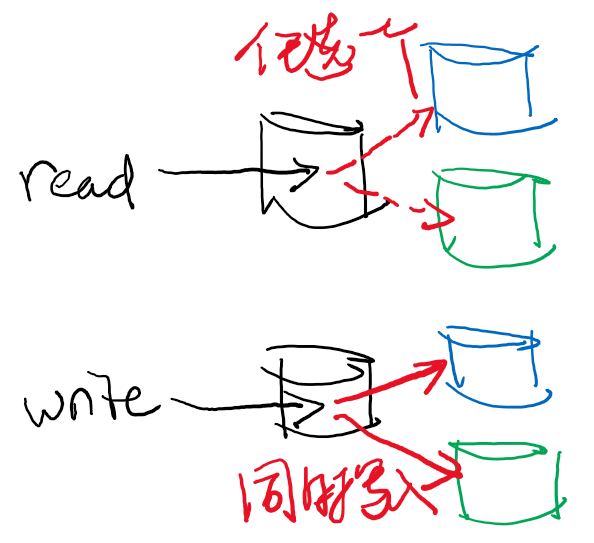
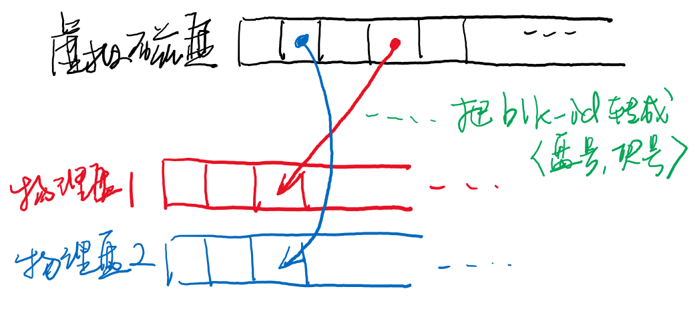
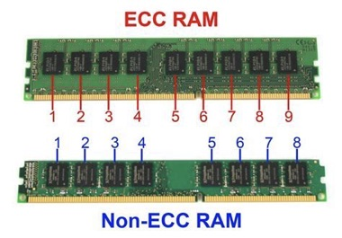

public: True class: center, middle # 持久数据的可靠性 蒋炎岩 <jyy@nju.edu.cn> 南京大学计算机软件研究所 --- # 本讲概述 > 我们已经学习了一些文件系统的实现：fat, ext2, ... > > * 从提高性能的角度，这是一个数据结构问题 > * 文件系统中存储的是.red[宝贵的数据] > * 你的照片/文件/代码/…… > * 教务处的成绩 > * …… > * 但磁盘块可能被枪毙；计算机随时可能断电…….red[如何保证持久数据的可靠性]？ * RAID --- class: center, middle # L2 Bug解释 --- # 数据竞争 > 发生在.red[两个线程]/处理器上对.red[同一个地址]的两个.red[内存访问]，且.red[至少有一个是写] 产生不确定性的结果，通常意味着bug * 那么……什么东西会发生数据竞争呢……？ * 让我们来回顾一下中断处理的过程 --- class: center, middle # 持久数据的可靠性 --- # 实际系统的复杂性 我们平时做的OJ题：做了很多假设 * 输入格式、数据规模等都是固定好的 * 一旦有点不对，就不是自己的责任 ---- 实际系统 * 所有部件(硬件/软件)都不绝对可靠 * 黑客虎视眈眈…… --- # 实际系统 整个世界都是不可靠的 - 软件有bug (Kernel crash，SSD FTL bug) - 硬件有不可靠 - 人也有bug ---- 开源软件不背锅；但.red[系统还得造]啊 > The software is provided “as is”, without warranty of any kind, express or implied, including but not limited to the warranties of merchantability, fitness for a particular purpose and noninfringement. --- # 宝贵的持久数据 * 游戏数据丢失——今晚没法玩了 * 手机数据损坏无法开机——今天没法过了 * 电脑硬盘坏了——这几周没法过了 * 我们的服务器硬盘挂了，<del>研究无法进行</del> * OS作业没法交了/教务系统崩坏——这几年没法过了，重修所有课程 * 银行/支付宝弄丢了你的账号——破产了，没法活了 --- # 宝贵的持久数据 (cont'd) > 创业公司“前沿数控”2018年8月5日发文称，公司存放在腾讯云上的精准注册用户以及内容数据全部丢失，并且不能恢复，造成公司平台全部停运的状态。前沿数控表示，公司丢失的数据近千万元级，对此索赔1000余万元。腾讯云对此回应称，该事故是因受所在物理硬盘固件版本bug导致的静默错误(写入数据和读取出来的不一致)影响(硬件公司不为此负责)，文件系统元数据损坏，仅能赔偿13万余元现金或云资源的额外补偿。 ---- 如果你运营你的公司，你会怎么办？ -- count: false * FAT早就有解决方法了：副本 * 在不同的物理机器上申请多个.red[备份]磁盘 * 定期进行数据备份，最好是每个操作以后都备份 (.red[同步]) --- class: center, middle # RAID：创建副本 --- # 磁盘是不可靠的 你的磁盘每天都有可能会.red[坏掉] * 坏掉就是数据好像从世界上消失了 * 你还敢用这个硬盘做{教务系统, 支付宝, 银行, …}吗？ 总有一天，一定有磁盘会坏掉的 * 坏事件一旦发生，就有数据会丢失 * .red[永远不丢失数据似乎是不可能的] * 但我们需要.red[降低出问题的概率] (三体人进攻地球……摧毁所有数据中心……) ---- 问题：.red[怎样用不可靠的磁盘构造更可靠的磁盘？] --- # 磁盘：虚拟化 我们见过的虚拟化 * 线程：把一个CPU分时虚拟成多个虚拟CPU * 虚存：把一份内存通过MMU虚拟成多个地址空间 * 文件：把块设备虚拟成多个虚拟磁盘 ---- 把多个磁盘.red[虚拟]成一块磁盘 * 看起来就是一个磁盘(read, write)，但可靠性得到保证 * Redundant Arrays of Inexpensive (Independent) Disks --- # 磁盘：虚拟化 (cont'd) 磁盘是块的集合，支持`read(blk, buf);`, `write(blk, buf);` 用两块磁盘(redundancy)实现.red[容错] * `read(blk)` -> 从任何一块盘读即可 * `write(blk)` -> 必须写入两块磁盘 .center[] --- # 分析 用两块盘 * 实现了2X读速度 * 写速度不变 * 可以抵抗一块盘损坏 (只要磁盘没有连续损坏，就能实现容错) ---- 用多块磁盘做一块虚拟磁盘时，我们可能： * .red[对读写性能产生影响] * .red[提供一定的容错保证] --- # RAID：设计空间 设计RAID，就是设计“如何把虚拟磁盘块映射到物理磁盘块” * 允许一对多映射 .center[] --- # RAID-0 = 没有Redundancy 表格中的数字是虚拟磁盘的块编号 思考题：.green[以下哪种方案更好]？ * 方案1 | Block | 磁盘1 | 磁盘2 | | ----- | ----- | ----- | | #0 | 0 | 1 | | #1 | 2 | 3 | | #2 | 4 | 5 | * 方案2 | Block | 磁盘1 | 磁盘2 | | ----- | ----- | ----- | | #0 | 0 | 3 | | #1 | 1 | 4 | | #2 | 2 | 5 | --- # RAID-0 用两块磁盘得到了性能2X、容量2倍的虚拟磁盘 * 随机读 * 随机写 * 顺序读 * 顺序写 但不能容错(没有redundancy) --- # RAID-1 = 镜像 维护两块数据.red[完全一样]的磁盘实现容错 | Block | 磁盘1 | 磁盘2 | | ----- | ----- | ----- | | #0 | 0 | 0 | | #1 | 1 | 1 | | #2 | 2 | 2 | | #3 | 3 | 3 | 这就是之前想到的直观方法 * 随机读/随机写/顺序读/顺序写的性能？ --- # RAID-1 (cont'd) | Block | 磁盘1 | 磁盘2 | 磁盘3 | 磁盘4 | | ----- | ----- | ----- | ----- | ----- | | #0 | 0 | 0 | 1 | 1 | | #1 | 2 | 2 | 3 | 3 | | #2 | 4 | 4 | 5 | 5 | | #3 | 6 | 6 | 7 | 7 | --- # RAID-1 (cont'd) RAID中的镜像磁盘是独立的！ ```c void write(int blk, char *data) { t1 = write_async(DISK(blk), BLOCK1(blk), data); t2 = write_async(DISK(blk), BLOCK1(blk), data); wait(t1); wait(t2); } ``` ---- 因为断电/crash/…情况，数据只写入了一个磁盘(不一致)…… (???) --- # RAID-0, 1, 10, 01 * RAID-10 = RAID-1 + 0 = RAID-1 (不是十) * RAID-01 = RAID-0 + 1 = 交换磁盘2/3 * RAID-2, 3, 4, 5… ? --- # 做个数学题 假设 <math> S = \\{1, 2, \ldots, n\\} \setminus \\{x\\}\ (x\in S)</math> * 如何仅扫描一遍 <math>S</math>，在 <math>O(1)</math> 空间前提下找到 <math>x</math>？ -- count: false ---- 假设 <math> S = \\{1, 2, \ldots, n\\} \setminus \\{x, y\\}\ (x \ne y \in S)</math> * 如何仅扫描一遍 <math>S</math>，在 <math>O(1)</math> 空间前提下找到 <math>x, y</math>？ --- # 纠错码 无论有多少bit，只要至多只有1位错，我们就可以用1bit来纠错 * 存储<math>x, y, z, x\oplus y\oplus z</math> * 任何.red[一个]数值丢失，都能恢复出剩下的 ---- 重要提示：.red[我们并不需要2倍的磁盘来容忍1块磁盘的错误] .center[] --- # RAID-4 | Block | 磁盘1 | 磁盘2 | 磁盘3 | 磁盘4 | 磁盘P | | ----- | ----- | ----- | ----- | ----- | --------------------------------------- | | #0 | 0 | 1 | 2 | 3 | <math>0\oplus1\oplus2\oplus3</math> | | #1 | 4 | 5 | 6 | 7 | <math>4\oplus5\oplus6\oplus7</math> | | #2 | 8 | 9 | 10 | 11 | <math>8\oplus9\oplus10\oplus11</math> | | #3 | 12 | 13 | 14 | 15 | <math>12\oplus13\oplus14\oplus15</math> | 5块盘实现： * 顺序/随机读 4X加速 * 顺序写入依然可以4X * 随机写入：<math>P' = P \oplus D' \oplus D</math> * 需要读出D和P；计算后再写入 * 速度.red[减半] --- # RAID-5 Parity盘是整个系统的瓶颈！ | Block | 磁盘1 | 磁盘2 | 磁盘3 | 磁盘4 | 磁盘P | | ----- | ----- | ----- | ----- | ----- | ----- | | #0 | 0 | 1 | 2 | 3 | P | | #1 | 4 | 5 | 6 | P | 7 | | #2 | 8 | 9 | P | 10 | 11 | | #3 | 12 | P | 13 | 14 | 15 | * 顺序/随机读 4X加速 * 顺序写入依然4X * 随机写入：<math>P' = P \oplus D' \oplus D</math> * 依然需要2读2写 --- # RAID：理论分析 假设有<math>n</math> 块组成RAID | RAID | 容量 | 容错 | 顺序读 | 随机读 | 顺序写 | 随机写 | | ---- | ---------------- | ----------------- | ----------------- | ---------------- | ---------------- | ---------------- | | 0 | <math>n</math> | 0 | <math>n</math> | <math>n</math> | <math>n</math> | <math>n</math> | | 1 | <math>n/2</math> | 1..<math>n</math> | <math>>n/2</math> | <math>n</math> | <math>n/2</math> | <math>n/2</math> | | 4 | <math>n-1</math> | 1 | <math>n-1</math> | <math>n-1</math> | <math>n-1</math> | <math>1/2</math> | | 5 | <math>n-1</math> | 1 | <math>n-1</math> | <math>n</math> | <math>n-1</math> | <math>n/4</math> | --- # RAID硬件 .float-right[<img src="../static/wiki/os/2019/img/raid-card.jpg" width="300px"/>] DRAM (cache) * 缓冲 & 日志 * 在RAID硬件上实现奇偶校验 电池 * 在系统故障时保证数据写回